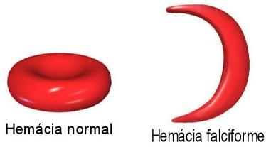
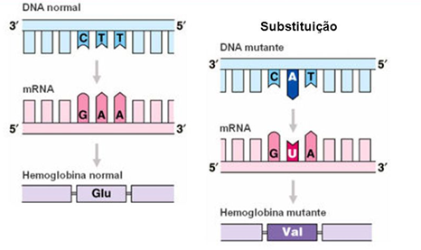
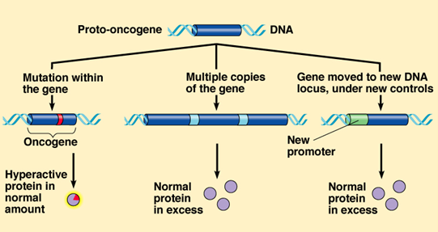
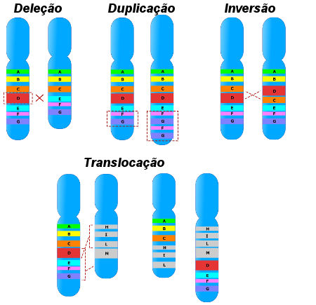
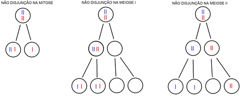

O genoma de um indivíduo pode sofrer alterações designadas mutações.

As mutações podem ocorrer durante o processo de duplicação de DNA tanto durante a meiose como durante a mitose. No primeiro caso, a mutação irá ocorrer a nível dos gâmetas e todas as células, enquanto que no segundo caso a(s) mutação(ões) restringem-se a uma pequena zona do organismo.
Mutações génicas:
As mutações génicas começaram a ser estudadas na tentativa de esclarecer as modificações fenotípicas que resultavam em anomalias. A primeira doença genética a ser detetada a nível molecular foi a anemia falciforme (drepanocitose), na qual se verifica que os doentes apresentavam hemácias com uma forma anormal, semelhante à de uma foice.
Esta doença surge, maioritariamente, na África Central e resulta da mutação de um gene localizado no cromossoma 11. A anemia falciforme é determinada por um gene recessivo e é responsável por um elevado número de mortes no continente africano. Contudo, a frequência do gene mutante não tem sofrido grandes oscilações nesta região.
Este facto parece estar relacionado com o facto de os indivíduos heterozigóticos serem resistentes ao parasita originador da malária, transmitido através da picada de um mosquito da espécie Anopheles. No organismo humano, este parasita penetra as hemácias onde se irá multiplicar até que estas rebentem, o que permite que este de espalhe por todo o organismo. Nos indivíduos portadores do gene mutante, as hemácias são mais frágeis, o que dificulta o processo de multiplicação do parasita.
Causas das mutações:
As mutações podem ocorrer espontaneamente na Natureza ou podem ser induzidas pela exposição a determinadas radiações ou substâncias químicas. Um agente capaz de provocar uma mutação é denominado de agente mutagénico. As mutações espontâneas ocorrem com uma frequência muito reduzida. De facto, o número de erros que ocorrem durante a duplicação do DNA é muitíssimo superior ao das mutações observadas, pois a maioria destes erros são reparados por certos complexos enzimáticos. No entanto, nem todos os erros são corrigidos e, aqueles que não o são, permanecem como mutações. Embora a maioria das mutações resulte em erros genéticos, algumas delas podem ser neutras ou até mesmo favoráveis, contribuindo para o processo evolutivo.
Os agentes mutagénicos podem ser divididos em diferentes categorias consoante a forma como atuam. Assim sendo, existem agentes:
- Químicos que, dada a semelhança com os nucleótidos, se integram no DNA.
- Químicos ou físicos que modificam as bases do DNA.
- Químicos ou físicos que provocam inserções ou deleções de nucleótidos ou até mesmo de porções cromossómicas.
Exemplos de agentes mutagénicos físicos: raios X, raios gama, raios ultravioletas, etc…
Exemplos de agentes mutagénicos químicos: ácido nítrico, gás mostarda, colquicina, etc…
A exposição a estes agentes é, em muitos casos, natural e inevitável, uma vez que na superfície do nosso planeta existem fontes naturais de radiações e de radioatividade como por exemplo certos minerais. Contudo, a exposição a agentes mutagénicos pode ser deliberada, por vezes usada para fins científicos como os raios X na área da medicina. Alguns agentes mutagénicos provocam mutações em genes que controlam a divisão celular, sendo responsáveis pelo aparecimento de cancro. Neste contexto, os agentes mutagénicos também são conhecidos por carcinogénicos. Utilizando técnicas de DNA recombinante foi possível identificar diversos genes que, ao deixar de funcionar naturalmente, transformam uma célula normal numa célula cancerígena. Nesta situação em específico, os genes passam a chamar-se de oncogenes ou genes causadores de cancro. Os oncogenes resultam de mutações em genes normais, designados de proto-oncogenes, envolvidos na síntese de proteínas que estimulam e controlam o crescimento e a divisão celular.
Um proto-oncogene pode tornar-se num oncogene caso exista uma movimentação do DNA no genoma, a amplificação do mesmo, uma mutação pontual do proto-oncogene ou inserção retroviral.
Verificou-se que alguns vírus são capazes de inserir porções do seu genoma no DNA da célula hospedeira, contendo genes promotores. Se esses genes promotores forem inseridos junto a um proto-oncogene, podem levar à expressão excessiva do mesmo, conduzindo ao desenvolvimento de cancros.
Por outro lado, os vírus podem ser causadores de cancro por serem portadores de um oncogene, cuja expressão pode promover o desenvolvimento de cancro.
Um dos primeiros oncogenes a ser identificado e isolado estava envolvido no desenvolvimento de um tumor na bexiga. Nele verificou-se que o oncogene era o resultado de uma substituição nucleotídica de um proto-oncogene. Esta simples modificação era suficiente para transformar uma célula normal numa célula cancerosa.
Nem todos os genes causadores de cancro resultam de proto-oncogenes, na verdade, uma grande parte dos cancros resulta da mutação de genes supressores de tumores, ou antioncogenes. Estes genes estão envolvidos na produção de proteínas que mantêm a integridade do genoma ou inibem a divisão celular. Quando eles sofrem uma mutação perdem a capacidade de controlar a divisão celular.
O cancro é, normalmente, o resultado da acumulação de várias alterações genéticas na mesma célula. Por vezes, tudo começa com uma variação benigna, mas que com o aparecimento de novas mutações, se torna também ela maligna. Estas células depois abandonam o tecido a que pertencem e viajam na corrente sanguínea, invadindo outros tecidos e conduzem assim ao colapso do organismo.
Mutações cromossómicas:
Durante a meiose podem ocorrer fenómenos de crossing-over, que permitem a troca de material genético entre cromossomas homólogos, aumentando a variabilidade genética. Contudo, por vezes, durante este processo ocorrem erros que levam à alteração da estrutura ou do número de cromossomas.
Estas alterações estruturais ou numéricas modificam o genoma do indivíduo, que se manifestam em alterações fenotípicas mais ou menos significativas. Em muitos casos, as modificações do genoma são tão significativas que acabam por não ser compatíveis com a vida.
Mutações cromossómicas estruturais:
Nas mutações cromossómicas estruturais apenas é alterado o número de genes, mantendo-se assim o número total de cromossomas característico da espécie em questão.
Mutações cromossómicas numéricas:
Um cariótipo que apresente o número total de cromossomas diz-se euploide. Geralmente, os organismos são haploides (n) ou diploides (2n). Contudo, podem ocorrer erros durante a meiose que multipliquem o conjunto de cromossomas, dando origem a poliploidias. Noutras situações, os erros que ocorrem na separação dos cromossomas envolvem apenas um certo par de cromossomas homólogos, dando origem a aneuploidias. As poliploidias também podem resultar da união de mais do que dois gâmetas e originam indivíduos cujas células possuem 3 ou 4 cópias de cada cromossoma (tripoide – 3n e tetraploide – 4n). No caso da nossa espécie a poliploidia é letal, no entanto, existem espécies como as de determinadas plantas em que a poliploidia não só é viável, como pode levar à formação de novas espécies. As aneuploidias correspondem a situações em que é afetado apenas um par de cromossomas, nomeadamente a trissomia – existe um cromossoma a mais; e a monossomia – existe um cromossoma a menos. Em casos extremamente raros, pode não existir nenhum cromossoma num determinado par – nulissomia – sendo este tipo de mutação associado a fenómenos de não-disjunção dos cromossomas homólogos durante a meiose.
Na espécie humana são raras as aneuploidias que envolvem autossomas e que são compatíveis com a vida, mas aquelas que permitem a sobrevivência tempo suficiente após o parto são conhecidas como síndromes. As aneuploidias que envolvem cromossomas sexuais são, geralmente, menos graves do que as aneuploidias autossómicas. À semelhança do que acontece com as mutações génicas, algumas mutações cromossómicas podem ser favoráveis contribuindo, assim, para o processo evolutivo, como é o caso de algumas plantas.